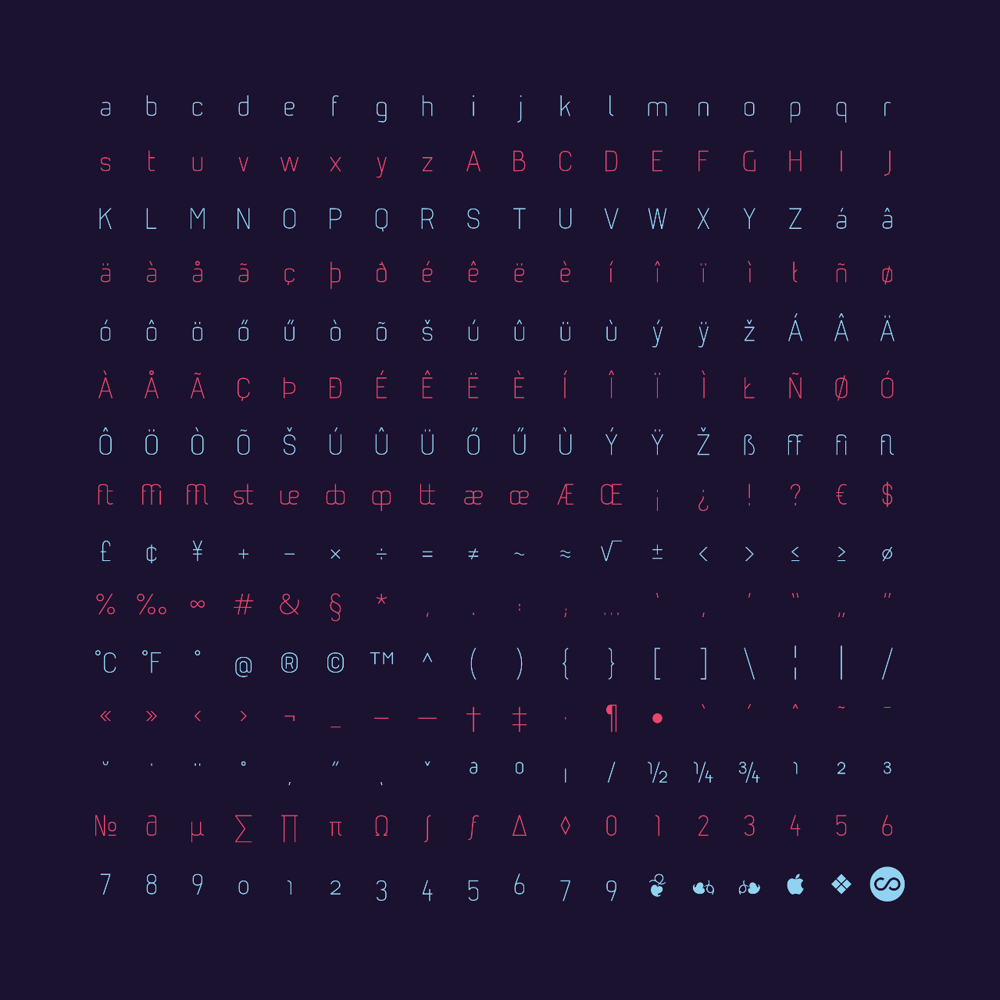
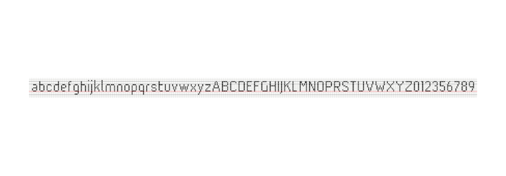

Each segment of the curves can be mapped 1:1 to pixels. As a matter of fact, initially the glyphs were all designed and rendered in “hard pixel” representations.
The typeface was designed especially for UI purposes, to be used in a CAD application, the Butterfly Cocoon (since version 3.1.3), later for Devsigner Beyond3D.
© 2008 – 2017 peter varo